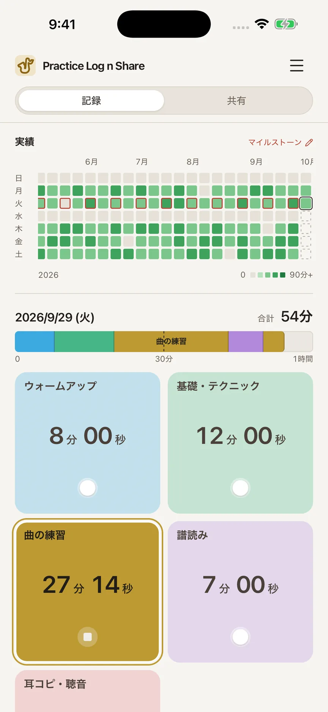

Practice Log n Share
記錄並分享日常音樂練習的應用程式
2026年9月


1. 概述
這是一款 iPhone App，讓我拿著樂器也能輕點一下記錄練習時間，再於課堂上把紀錄展示給老師。「記錄」與「分享」兩個畫面，把日常練習與課堂交流連接起來。
我負責界定問題、設計 UX 與 UI、在 iPhone 上調整互動、開發 App，以及製作專案資料。實作時與 AI 協作，畫面與互動方案的最終決定則由我自己做出。
我在自己的練習和課程中使用了這款應用程式。老師表示練習內容一目了然，也提出了記錄更多細節的需求（意見摘要）。
2. 背景與課題
我業餘吹奏次中音薩克斯風，每兩週上一次課。老師問「最近練得怎麼樣？」時，我卻沒有辦法具體說明練了什麼、練了多久。
薩克斯風用背帶掛在身前，練習時不方便在紙上寫字。練習日誌的紙頁越來越多，記錄也逐漸分散。
我試用的時間記錄應用程式可以輕點一下開始計時，但如何把記錄整理成老師一眼就能理解的形式，仍是一個課題。
3. 設計原則
我希望把練習時的記錄與上課時的分享連成一個完整流程。因此，以兩項要求作為決定畫面和操作方式的依據。
練習時，讓記錄保持簡單
拿著樂器也能輕點類別，記錄時間。
上課前，省去整理紀錄的工作
記錄自動彙整，無需加工，就能展示練了什麼、練了多久。
4. 功能與設計
把操作與練習時間放在同一張卡片上
輕點類別卡片開始計時，輕點另一張卡片切換類別，再次輕點同一卡片則停止。每張卡片醒目顯示該類別今天的練習時間，只有正在計時的卡片會提亮顏色並加上白色外框。操作與記錄狀態在同一處呈現。
類別、今天的練習時間與計時狀態，都顯示在同一張卡片上。
無需橫向捲動，就能看全練習明細
App 自動彙整上次上課以來的練習，分享前不必再編輯紀錄。每日明細表優先讓所有類別同時可見，即使字體必須縮小。這樣我就能把畫面展示給老師，一起討論練習時間的分配。

讓練習的累積成為繼續堅持的動力
我把當天的進展，以及按月、按年累積的練習視覺化。也希望讓老師看到自己付出的努力，能成為繼續練習的動力。
單日：以一小時為參考，填滿進度條
今天的練習長條，初始範圍為零到一小時，並以不同顏色堆疊各類別的練習時間。我希望填滿長條能成為繼續練習的動力。
長期：用綠色格子呈現每天的累積
每個格子代表一天，綠色深淺表示當天的練習時間。讓按月、按年累積的格子能夠一覽無遺，希望日常記錄不斷增加的過程，能促使自己持續練習。
5. 製作過程
透過研究釐清記錄與分享的角色
我用ChatGPT調查既有應用程式，整理問題與思路。在當時的調查範圍內，找到了時間管理應用程式，但沒有找到適合與老師溝通的分享機制。我將透過對話具體化的概念整理成規格說明，交給Codex實作初版。
調整初版，讓操作區域保持可見
我親自操作生成的初版，提出UI和UX改進要求，逐步調整為改良版。初版中分開顯示的計時資訊與停止操作被整合進卡片，當天的時間也更加醒目。同時探索了讓操作面板完整顯示在螢幕內的配置。

初版

改良版
初版中分開顯示的計時資訊與停止操作，在改良版中整合進了卡片。
考慮到練習時會一直開著這個畫面，我以黑色為基調，同時希望透過類別顏色營造輕快的感覺。
先比較捲動手感，再選擇實作方式
僅靠文字與圖片，無法調出我想要的「順暢移動、穩穩停住」的手感。我與 AI 一起製作調整工具，親自測試不同捲動方式與參數。在 iPhone 上比較捲動停下的位置，尋找能讓整個操作面板保持可見的方式。最後選擇瀏覽器原生的捲動吸附，並用於 App 中。

運用獨立審查，再自行決定採用哪些建議
我以兩個獨立的 AI 對話反覆進行審查：先檢視 Claude Code 指出的問題與改善建議，再請 Codex 驗證並完成必要修正。有些建議偏離我想要的 UI 與 UX，因此是否採用，仍由我依 App 的目的與實際操作感受決定。
這個過程重複了約 15 次。當 AI 審查不再指出重大缺陷時，我將其視為結束這輪改進的依據之一。
6. 使用經驗與後續方向
開啟應用程式，成為開始練習時的習慣
我將應用程式安裝在自己的iPhone上，每天練習時使用，確認拿著樂器也能輕點一下記錄的便利性。練習開始時開啟應用程式，逐漸成為一個正向的習慣。回顧當天練習的順序與分配，並留意下次上課的日期，都有助於我規劃練習。
老師希望記錄更多細節
老師表示練習內容一目了然，如果能記錄具體的音階種類，會更加實用（意見摘要）。這些觀察基於個人經驗，來自我自己的練習和與老師的課程。
下一步：兼顧記錄的詳細程度與便利性
我正在考慮在「音階」下增加「五聲音階」等子類別。如何保持記錄操作簡便，仍在探索。分享畫面也在考慮用類別與子類別的階層展示，取代每日明細表。